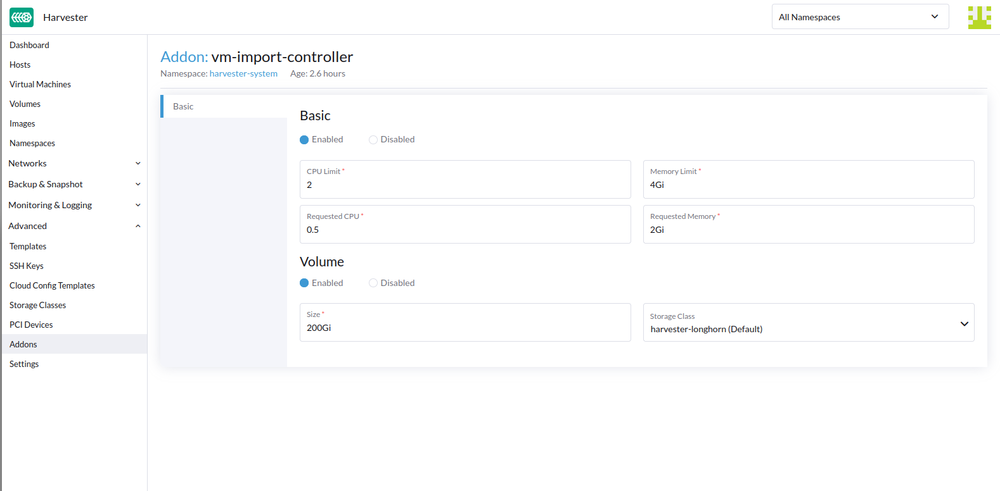

|
本文档采用自动化机器翻译技术翻译。 尽管我们力求提供准确的译文，但不对翻译内容的完整性、准确性或可靠性作出任何保证。 若出现任何内容不一致情况，请以原始 英文 版本为准，且原始英文版本为权威文本。 |
虚拟机导入控制器
您可以通过 vm-import-controller 附加产品将虚拟机从 VMware、OpenStack 和虚拟设备 (OVA) 软件包导入到 SUSE Virtualization 中。在开始导入虚拟机之前，必须启用该附加产品。

默认情况下，vm-import-controller 利用临时存储，该存储从 /var/lib/kubelet 挂载。
在迁移过程中，大型虚拟机的节点可能会在此挂载上耗尽空间，导致后续调度失败。
为避免这种情况，建议用户启用 PVC 支持的存储并自定义所需的存储量。根据最佳实践，PVC 的大小应为迁移中最大虚拟机大小的两倍。这很重要，因为 PVC 用作下载虚拟机的临时空间，并将磁盘转换为原始映像文件。

API
vm-import-controller 引入了两个 CRD。
Source（来源）
源允许用户定义有效的源集群。
例如：
apiVersion: migration.harvesterhci.io/v1beta1
kind: VmwareSource
metadata:
name: vcsim
namespace: default
spec:
endpoint: "https://vscim/sdk"
dc: "DCO"
credentials:
name: vsphere-credentials
namespace: default该密钥包含 vCenter 端点的凭据：
apiVersion: v1
kind: Secret
metadata:
name: vsphere-credentials
namespace: default
stringData:
"username": "user"
"password": "password"作为协调过程的一部分，控制器将登录 vCenter 并验证源规范中指定的 dc 是否有效。
一旦通过此检查，源将被标记为准备就绪，可以用于虚拟机迁移。
$ kubectl get vmwaresource.migration
NAME STATUS
vcsim clusterReady对于基于 OpenStack 的源集群，示例定义如下：
apiVersion: migration.harvesterhci.io/v1beta1
kind: OpenstackSource
metadata:
name: devstack
namespace: default
spec:
endpoint: "https://devstack/identity"
region: "RegionOne"
credentials:
name: devstack-credentials
namespace: default该密钥包含 OpenStack 端点的凭据：
apiVersion: v1
kind: Secret
metadata:
name: devstack-credentials
namespace: default
stringData:
"username": "user"
"password": "password"
"project_name": "admin"
"domain_name": "default"
"ca_cert": "pem-encoded-ca-cert"作为协调过程的一部分，控制器尝试列出项目中的虚拟机并将源标记为准备就绪。
$ kubectl get openstacksource.migration
NAME STATUS
devstack clusterReady对于基于 OVA 的源，示例定义如下：
apiVersion: migration.harvesterhci.io/v1beta1
kind: OvaSource
metadata:
name: example
namespace: default
spec:
url: "http://192.168.0.1:8080/example.ova"
httpTimeoutSeconds: 300
credentials:
name: example-ova-credentials
namespace: default可选的 httpTimeoutSeconds 字段允许您指定 SUSE Virtualization 等待 HTTP 请求完成的最大时间（以秒为单位）。此时间段涵盖整个事务，包括建立连接、处理重定向和读取响应主体。当值为 0 时，超时功能被禁用。默认值为 600（10 分钟）。
在配置密钥时，如果端点使用 HTTPS，您可以包括 URL 的基本身份验证凭据和 CA 证书。
apiVersion: v1
kind: Secret
metadata:
name: example-ova-credentials
namespace: default
stringData:
"username": "user"
"password": "password"
"ca.crt": "pem-encoded-ca-cert"作为协调过程的一部分，控制器向指定的 URL 发出 HEAD 请求，以确认其有效性，然后再将源标记为已准备好。
$ kubectl get ovasource.migration
NAME STATUS
example clusterReadyVirtualMachineImport
VirtualMachineImport CRD 为用户提供了一种定义源虚拟机并映射到实际源集群以执行虚拟机导出/导入的方法。
一个示例 VirtualMachineImport 如下所示：
apiVersion: migration.harvesterhci.io/v1beta1
kind: VirtualMachineImport
metadata:
name: alpine-export-test
namespace: default
spec:
virtualMachineName: "alpine-export-test"
folder: "Discovered VM"
networkMapping:
- sourceNetwork: "dvSwitch 1"
destinationNetwork: "default/vlan1"
- sourceNetwork: "dvSwitch 2"
destinationNetwork: "default/vlan2"
networkInterfaceModel: "e1000"
defaultNetworkInterfaceModel: "virtio"
skipPreflightChecks: false
storageClass: "my-storage-class"
defaultDiskBusType: "scsi"
sourceCluster:
name: vcsim
namespace: default
kind: VmwareSource
apiVersion: migration.harvesterhci.io/v1beta1
forcePowerOff: false
gracefulShutdownTimeoutSeconds: 30这会提示控制器将名为 alpine-export-test 的虚拟机从源 VMware 集群导出，以便在 SUSE Virtualization 集群中导出、处理和重建。
控制器在开始导入处理之前检查配置，并在检测到未知 StorageClasses 或网络等错误时取消。这些检查默认启用，但可以通过将 skipPreflightChecks 设置为 true 来禁用。
导入过程的持续时间取决于虚拟机的大小。虽然导入过程可能需要一些时间，但您应该会看到为定义的虚拟机中的每个磁盘创建了 VirtualMachineImages。
如果源虚拟机放置在文件夹中，您可以在可选的 folder 字段中指定文件夹名称。
networkMapping 中的项目列表将定义源网络接口如何映射到 SUSE Virtualization 网络。
如有必要，您可以使用 networkInterfaceModel 字段单独指定每个源网络接口的型号。有效值为 e1000、e1000e、ne2k_pci、pcnet、rtl8139 和 virtio。
使用 defaultNetworkInterfaceModel 字段指定默认网络接口模型在以下情况下特别有用：
-
您希望在自动检测对 VMware 导入无效或对 OpenStack 导入的所有网络接口使用的默认模型时覆盖默认模型。
-
未提供网络映射，
pod-network网络接口被自动创建。
如果您未指定值，则默认使用 virtio。
如果未找到匹配项，则每个未匹配的网络接口将附加到默认的 managementNetwork。
storageClass 字段指定在导入过程中用于图像和持久卷配置的 StorageClass。如果未指定值，则 SUSE Virtualization 使用默认的 StorageClass。
defaultDiskBusType 字段允许您指定导入磁盘的总线类型。SUSE Virtualization 以以下方式使用此字段：
-
VMware 源：仅当 SUSE Virtualization 无法自动检测总线类型时，才使用该值。
-
OpenStack 源：该值适用于所有导入的磁盘。
-
虚拟设备 (OVA) 源：仅当 SUSE Virtualization 无法自动检测总线类型时，才使用该值。
有效值为 sata、scsi、usb 和 virtio。如果未指定值，则默认使用 virtio。
默认情况下，vm-import-controller 尝试在开始导入过程之前优雅地关闭源虚拟机的来宾操作系统。如果虚拟机在特定时间内未优雅关闭，则强制进行硬关机。您可以通过更改 gracefulShutdownTimeoutSeconds 字段的值来调整优雅关闭的时间，该值默认设置为 60 秒。通过将 forcePowerOff 字段设置为 true，可以强制进行不尝试优雅关闭的硬关机。
如果您正在导入基于 VMware 的虚拟机，则 vm-import-controller 的行为取决于虚拟机上是否安装了 VMware Tools。
| VMware Tools 状态 | vm-import-controller 行为 |
|---|---|
已安装 |
在开始导入过程之前尝试描述的优雅关闭。 |
未安装 |
显示类似于 |
|
vm-import-controller 仅支持 VMware 的 |
一旦虚拟机成功导入，对象将反映状态：
$ kubectl get virtualmachineimport.migration
NAME STATUS
alpine-export-test virtualMachineRunning
openstack-cirros-test virtualMachineRunning同样，用户也可以为 OpenStack 源定义 VirtualMachineImport：
apiVersion: migration.harvesterhci.io/v1beta1
kind: VirtualMachineImport
metadata:
name: openstack-demo
namespace: default
spec:
virtualMachineName: "openstack-demo" #Name or UUID for instance
networkMapping:
- sourceNetwork: "shared"
destinationNetwork: "default/vlan1"
- sourceNetwork: "public"
destinationNetwork: "default/vlan2"
sourceCluster:
name: devstack
namespace: default
kind: OpenstackSource
apiVersion: migration.harvesterhci.io/v1beta1|
OpenStack 允许用户拥有多个同名实例。在这种情况下，建议用户使用实例 ID。当使用名称时，协调逻辑会尝试执行名称到 ID 的查找。 |
已知问题
源虚拟机名称不符合 RFC1123 标准。
在创建虚拟机对象时，vm-import-controller 附加产品使用源虚拟机的名称，该名称可能不符合 Kubernetes 对象 命名标准。您可能需要重命名源虚拟机以允许成功完成导入。
未安装 VMware Tools 的基于 VMware 的虚拟机无法迁移。
当您尝试在 SUSE Virtualization v1.6.0 中导入基于 VMware 的虚拟机时，如果虚拟机上未安装 VMware Tools，将出现以下问题：
-
vm-import-controller 不会优雅地关闭来宾操作系统。
-
当优雅关机时间 (
gracefulShutdownTimeoutSeconds) 过期时，vm-import-controller 不会强制进行硬关机。 -
虚拟机未从 VMware 迁移。
为了解决此问题，请执行以下其中一个解决方法：
-
在迁移到 SUSE Virtualization 之前关闭虚拟机。
-
在
VirtualMachineImportCRD 规格中，将forcePowerOff字段设置为true。 -
安装 VMware Tools 或 open-vm-tools。
驱逐策略未设置。
在虚拟机导入过程中，evictionStrategy 字段未自动配置。这阻止了虚拟机的实时迁移。
为了解决这个问题，请运行以下命令：
kubectl patch VirtualMachine <vm-name> -n <namespace> --type=merge -p '{
"spec": {
"template": {
"spec": {
"evictionStrategy": "LiveMigrateIfPossible"
}
}
}
}'要更新所有缺少 evictionStrategy 配置的虚拟机，请运行以下命令：
for vm in $(kubectl get VirtualMachine -A -o json | jq -r '.items[] | select(.spec.template.spec.evictionStrategy == null) | "\(.metadata.namespace):\(.metadata.name)"'); do \
kubectl patch VirtualMachine ${vm#*:} -n ${vm%:*} --type=merge -p '{"spec":{"template":{"spec":{"evictionStrategy":"LiveMigrateIfPossible"}}}}'; \
done您必须重启虚拟机以应用更改。